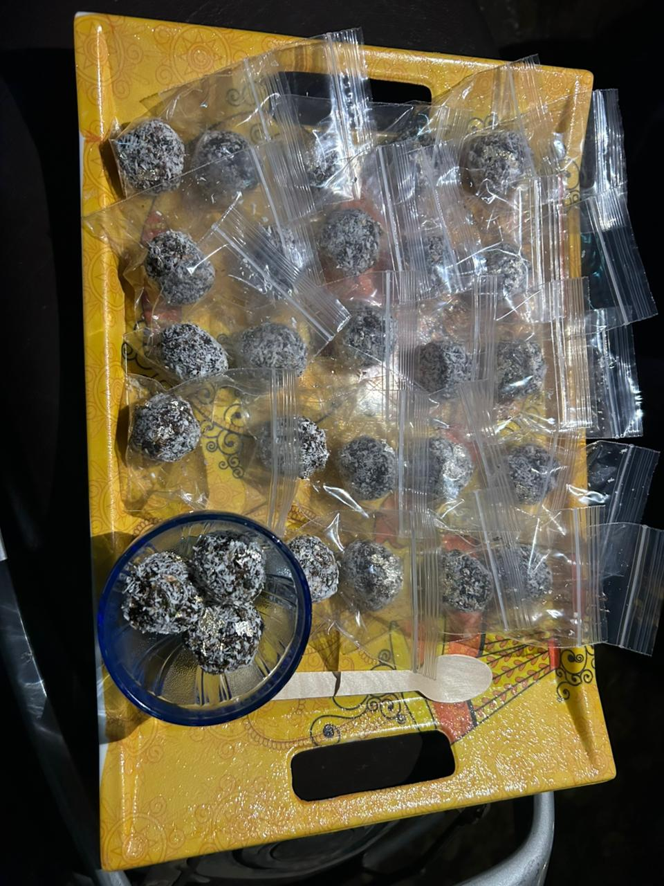
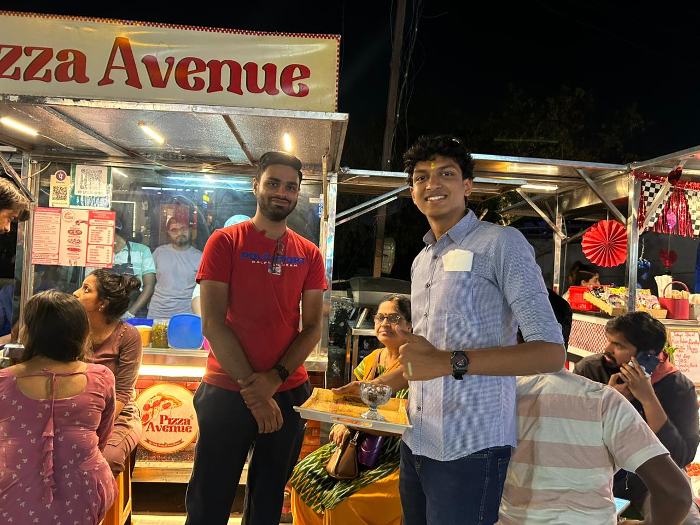
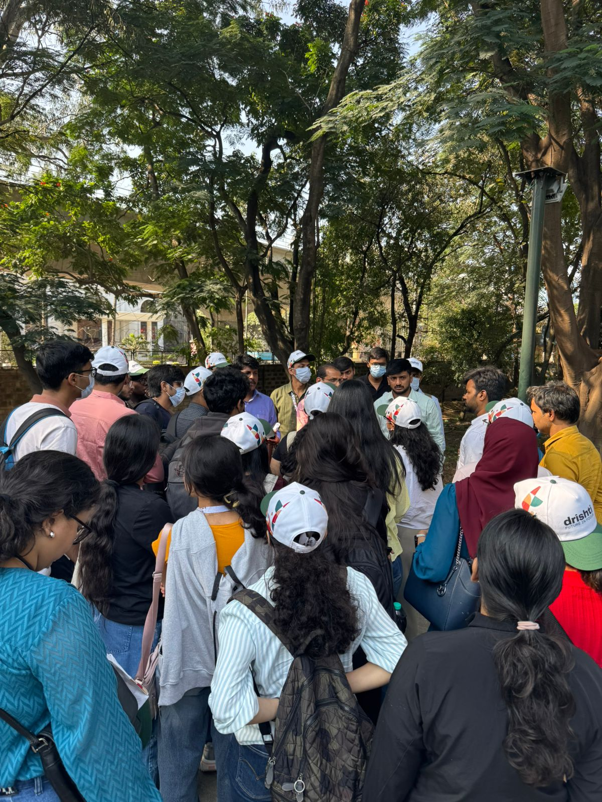
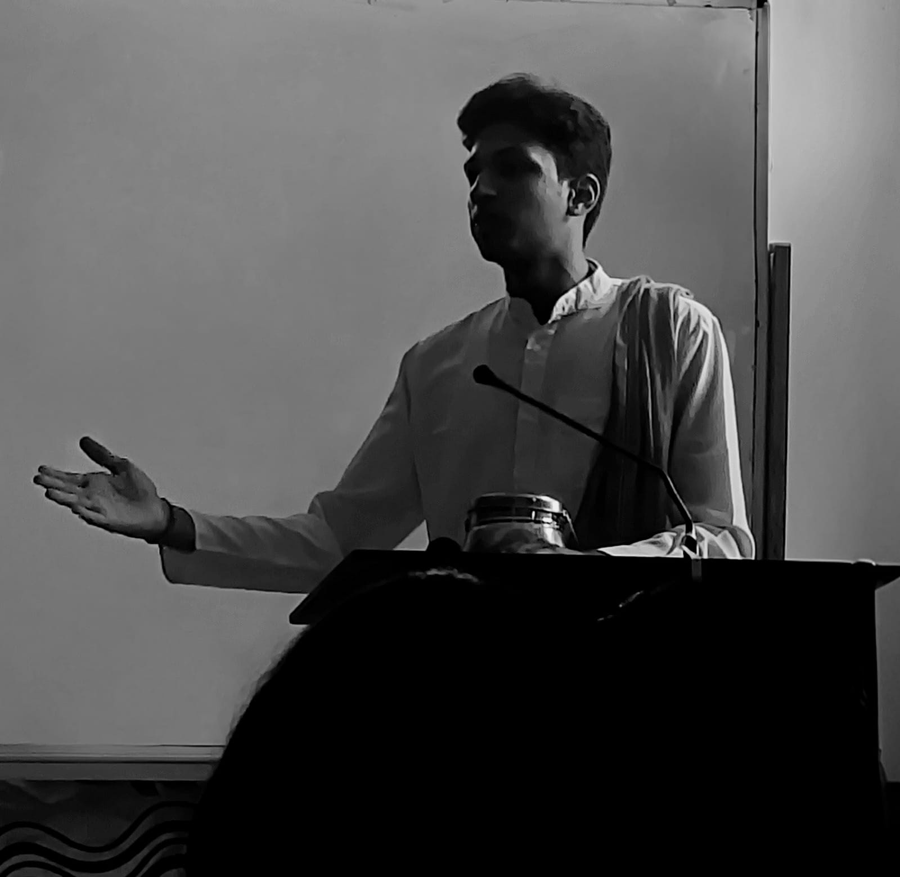
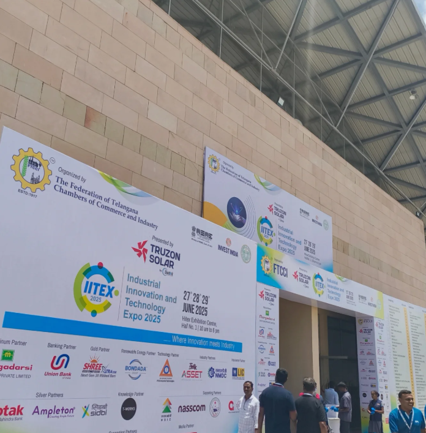
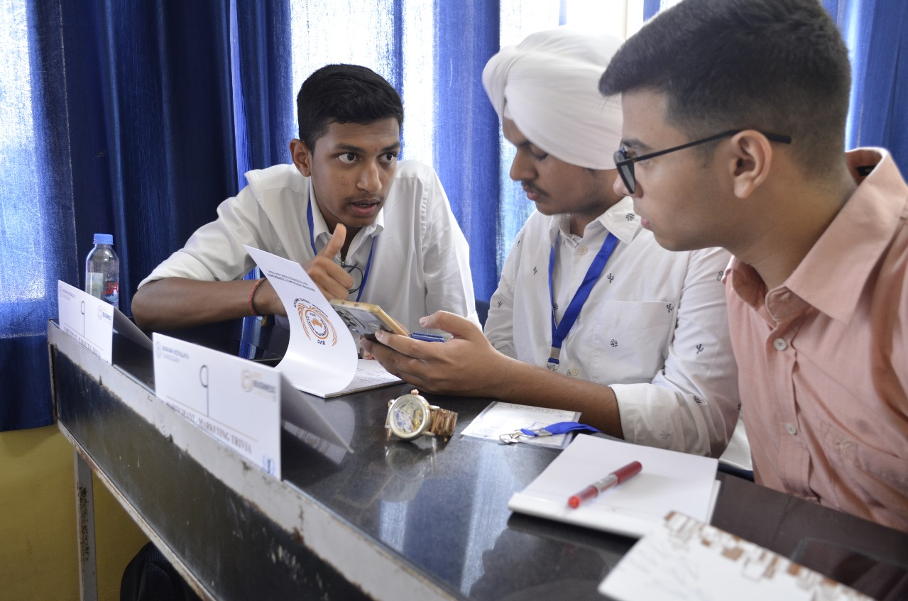
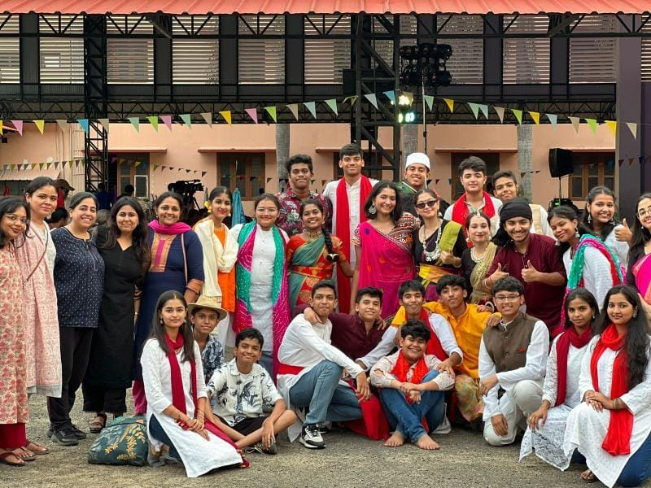
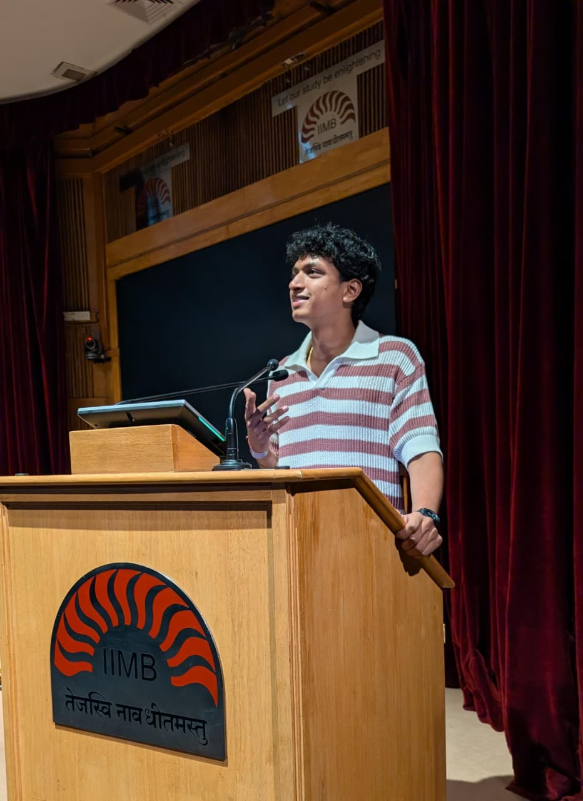

Indian Institute of Management Bangalore
BBA in Digital Business and Entrepreneurship
Student Portfolio
Dual-degree BBA student at IIM Bangalore and Bhavan’s Vivekananda College, Hyderabad, with a strong interest in entrepreneurship, business, leadership, and problem-solving.

official.kunshsumitagarwal@gmail.com
Startups, Business, and Entrepreneurship
Leadership, Communication, Execution, and Problem Solving
About
I am a motivated dual-degree BBA student pursuing Digital Business and Entrepreneurship from IIM Bangalore alongside Business Analytics and Intelligence from Bhavan’s Vivekananda College, Hyderabad. I am deeply interested in startups and entrepreneurial problem-solving, with a strong inclination toward identifying real-world challenges and building scalable, ethical business solutions.
My academic and extracurricular journey reflects a blend of business exposure, leadership, execution, and analytical thinking. I enjoy simplifying complex problems, leading teams, and taking initiative in projects that require both creativity and structure.
In the short term, I aim to gain exposure across multiple domains, understand social and market-level challenges, and sharpen my entrepreneurial thinking. In the long term, I aspire to build and scale a well-established business rooted in strong values and ethics.
Education
BBA in Digital Business and Entrepreneurship
BBA Honours in Business Analytics and Intelligence
Class 12 (CBSE) – 93%
Class 10 (CBSE) – 93%
Skills
Projects


Executed a ₹250 startup experiment by launching a Laddu Paan micro-venture, handling end-to-end operations including idea generation, procurement, pricing, and sales execution.
Adopted an active customer acquisition strategy in a high-footfall area and achieved a complete sell-out in 24 minutes. Generated ₹410 in revenue with an approximate 39% profit margin while applying concepts of unit economics, bundling, and customer behavior analysis.
Activities

Participated in Drishti, an annual flagship summit organized by the PGPEM batch of IIM Bangalore, featuring eminent industry leaders. Attended insightful speaker sessions, participated in competitions, and engaged in peer networking, enhancing my understanding of leadership, innovation, and real-world business dynamics.

Discovered various ways of becoming more sustainable in business and construction through an engaging walk around the IIM Bangalore campus, which allowed me to view these ideas from a different perspective.

Had the honour of enacting Dr. Verghese Kurien, the architect of the White Revolution, in Entrecon 4.0, a declamation competition conducted by the Entrepreneurship Development Cell.


Attended South India’s major real estate business opportunity meet held at Gachibowli Stadium, Hyderabad, in the presence of Mr. and Mrs. K. V. Pradeep, gaining business exposure in the real estate sector.

Explored the world of creators at the Hamstech Creators Collect Expo conducted at HITEX, Hyderabad, gaining exposure to the creator economy and innovation-led industries.

Planned, ran, and managed one of the highest-participation activities of UTOPIA 4.0 organized by the BVC Samvridhi Business Newsletter.

Explored machinery and technology related to modern electricity-driven business resources in India at HITEX, Hyderabad.

Participated in a business conclave focused on the marketing domain, conducted by Bhavan’s Vidyalaya Chandigarh.

This week-long camp in Kerala brought together six students from each Bharatiya Vidya Bhavan school across India. It provided a unique opportunity to work in a diverse environment and strengthened my teamwork, collaboration, and cultural understanding.
Semi-finalist in a leadership development contest based on the principles of Swami Vivekananda, conducted at Vivekananda Excellence Center, Hyderabad.
Recognized by the Ministry of Defence and the Ministry of Education for contributing to the Veer Gatha 3.0 initiative of the Government of India, commemorating the bravery of the Armed Forces of India.
Participated in multiple school-level and national-level Model United Nations conferences and was recognized for preparing a strong position paper for Finland, which helped me develop research and debate skills.
Also achieved ranks in school-level expos and competitions during my primary education, strengthening my confidence and competitive spirit from an early age.
Social Presence
Explore my public Instagram profile for updates on activities, events, leadership exposure, and my entrepreneurial journey.
Visit Instagram
Contact
I am open to meaningful opportunities, collaborations, and discussions related to entrepreneurship, business, and learning.